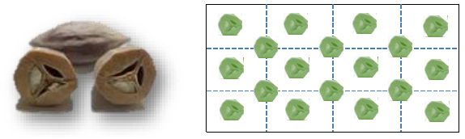

Hiên, một huyện miền núi phía tây Quảng Nam có rất nhiều quả trám. Các bạn Sinh viên Tình nguyện Mùa hè xanh thấy hột trám vương vãi quanh trường khá nhiều, đã nảy ra sáng kiến “trám hóa” sân trường. Có k hạt trám được thu thập về. Sân trường có hình chữ nhật. Bằng m đường cách đều nhau song song với một cạnh của sân trường và n đường cách đều nhau song song với cạnh kia của sân trường toàn bộ sân được chia thành các hình chữ nhật con giống nhau (1 ≤ m ≤ n). Các hột trám sẽ được chặt đôi. Sau khi ăn nhân bên trong học sinh sẽ đóng nửa hạt này xuống sân tại các điểm giao nhau giữa các đường kẻ và ở tâm điểm các hình chữ nhật con. Tại mỗi điểm chỉ đóng nửa hạt trám. Để không lãng phí số hạt trám đã thu nhặt và hạt trám được đóng phân bố đều trên sân các bạn sinh viên quyết định chọn m và n sao cho số hạt trám sẽ được dùng hết và hiệu n-m là nhỏ nhất.

Với k cho trước hãy xác định m và n. Nếu không tồn tại m và n thỏa mãn thì đưa ra số -1.
Dữ liệu vào:
- Là một số nguyên dương k (1 ≤ k ≤ 1012)
Dữ liệu ra:
- Gồm 2 số nguyên m và n cách nhau một khoảng trắng. Nếu không có kết quả in ra -1. Lưu ý là phải dùng hết số trám không được dư dù chỉ 1/2 quả.